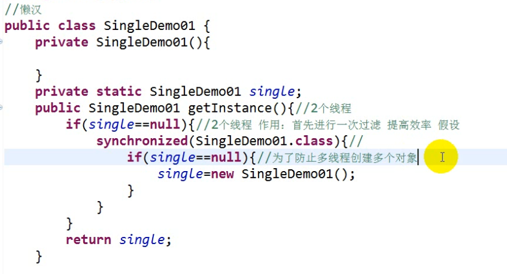

课程回顾：
list底层代码中最重要的方法就是add()方法, 尽量做到能手写:
arrayList add() 数组
LinkedList add() 双向链表 1.5之前是单链表, 后来改为双链表是为了提升查询性能
set：不可重复的 无序
hashset:
hashset去重最重要的办法: hashcode + equals
在1.8中hashset的底层结构是: 桶表（数组 默认长度16）+链表+二叉树
treeset：有序（大小 自然排序的）
二叉树 实际上在1.8中是红黑树
map：
1.hashmap 线程非安全的, 效率高 hashtable 线程非安全的, 效率低
2.concurrenthashmap 既是线程安全的, 也能保证效率。 通过加分段锁实现。
递归：
1）递归一定要单独的写一个方法
2）递归要有出口
3）规律
设计模式：
设计模式出现的原因:
通过大量的实践之后发现有一些固定的模式可以解决通用的场景问题, 是当前问题的最佳实现
设计模式在最初出现的时候就是为了解决某一种场景问题, 也就是说一种设计模式不需要针对很多场景, 只需要解决一种场景问题即可
java中常用的设计模式中有23种, 有7到8中可能在以后的开发中会用到
总原则：开闭原则 (对扩展开放, 对修改关闭。也就是说支持你去扩展功能, 但不支持你修改原来的功能,因为设计模式本来就是为了解决某一种场景的问题,类似于一个热插拔的效果)
设计模式中提倡面向接口编程很重要的原因是: 接口可以多实现, 而抽象类只能单继承。
总体来说设计模式分为三大类：
创建型模式，创建型模式是用来创建对象的, 共五种：工厂方法模式、抽象工厂模式、单例模式、建造者模式、原型模式。
结构型模式，结构型模式是对原来的模式进行扩展或优化的, 共七种：适配器模式、装饰器模式、代理模式、外观模式、桥接模式、组合 模式、享元模式。
行为型模式，行为型模式是用来操作代码(类)之间的行为属性的,共十一种：策略模式、模板方法模式、观察者模式、迭代子模式、责任链模 式、命令模式、备忘录模式、状态模式、访问者模式、中介者模式、解释器模式。
单例设计：
懒汉式：
什么时候使用什么时候创建对象

饿汉式：
一开始就创建对象
包含3部分：
1.私有的构造
2.私有的静态属性
3.共有方法 返回对象的
装饰者模式
io
被装饰对象的方法无法满足当前对象的需求的时候 当前对象可以对被装饰对象的方法进行增强
list集合操作 add（）
每次添加元素之前和之后分别打印一句话 我们需要对他进行装饰、包装
添加元素的时候只添加spark开头的
zengqiangadd(){
list.size()
add()
list.size()
}
写法：
1）将被装饰对象作为属性
2）对被装饰对象进行初始化
3）完善增强方法
代理模式
演员------经纪人（代理）
王宝强-----宋哲
王宝强：拍戏 拍广告 接戏 接广告 谈合作
自己只干核心的 不合心的东西让经纪人（代理）
代码上：扩展性 灵活性 复用性
层次分明 当一个代码中逻辑过多的时候 每一个代码只做自己的核心
静态代理
代理类的要求：
1）必须和被代理对象实现相同的接口
2）需要将被代理对象作为属性 并进行初始化
核心功能需要调用被代理对象的
3）和被代理对象事项相同的方法
注意：核心方法调用被代理对象的 代理对象无权越界
缺陷的：
1.如果有很多个对象需要代理 写很多雷同的代码 代码臃肿
2）如果被代理对象有很多方法需要实现 那么代理对象就需要实现很多的方法 代码量很大 搬砖
那么有没有一种代理方式可以同时代理多个对象，并且可以同时实现多个方法
-----动态代理的方式
动态代理：
数据库的增删改查 伪代码的方式
怎么代理多个对象，根据用户传入的生成代理------反射
学生在呼吸的饿时候 呼吸之前和之后都需要敲代码
1）修改原始代码
2）代理模式 学生只需要做好自己的工作就可以 其他的工作交给代理
装饰者模式和代理模式的区别：
1）代码结构上
装饰者模式 被装饰对象传入的时候是外部方式传入的
代理：代理和被代理对象必须实现相同的接口 必须实现吧相同的方法
需要被代理对象作为属性 初始化一般采用内部传入
2）从功能
装饰者模式：对被装饰对象的方法的增强或补充 功能上的补全
方法可以是已经存在的 也可以是从来没有存在的 readLine
代理模式：帮助被代理对象做辅助的功能
通常情况下包括：打印错误日志 监控 数据统计
代码管理上
冒泡
插入
选择 手写 理解
线程：
线程锁
三种排序：
冒泡
插入
选择
计数排序
快速排序
归并排序
面试过程中：
排序算法
设计模式 23
hadoop中wordcount
spark wordcount
scala wordcount
hadoop准备：
3台虚拟机 4台
内存1G --1.5G
硬盘：50G
网络
主机名
映射文件
jdk
创建一个普通用户 三台虚拟机普通用户名和密码一样
可变参数：定义的时候：
参数类型 ... 参数名
String ... names